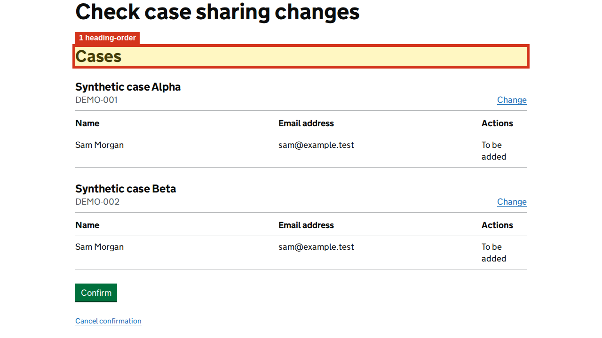

Show highlighted page image

1. heading-order
Heading level jumps from h1 to h3.
Selector: h3
Developer advice
Structure heuristic — context review required
Where to look
- Page
- http://localhost:4200/coverage/case-sharing/confirmation
- Selector
h3- Element
h3- Name hint
- Cases
- Nearby heading
- h1: Check case sharing changes
- Landmark
- main #main-content .govuk-width-container
- Why this matters
- Unexpected heading jumps can make section relationships harder to understand.
- What to fix
- Check whether the heading hierarchy represents the content. Use nested levels for subsections; do not insert empty headings just to satisfy the check.
- How to verify
- Review the complete heading outline and navigate it with a screen reader; confirm each subsection has the intended parent.
- Guidance
- W3C WAI: page headings
- Related WCAG criteria
- Related: 1.3.1 (A). A heading-level jump alone does not establish a failure. Criteria refer to WCAG 2.2; unless noted, they also existed in WCAG 2.0.
DOM hints and source investigation
search selector h3; search class govuk-heading-l; check template near h1: Check case sharing changes
These are rendered DOM clues, not a verified source-file mapping. Match the selector and nearby text in the route component/template. The excerpt may be truncated.
{
"tag": "h3",
"classes": "govuk-heading-l",
"accessibleName": "Cases",
"nearestHeading": "h1: Check case sharing changes",
"nearestLandmark": "main #main-content .govuk-width-container"
}Captured DOM excerpt
<h3 class="govuk-heading-l">Cases</h3>